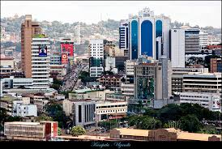

Odongkara Ronald
About Me

I am Odongkara Ronald, a student learning to create accessible and responsive websites with HTML, CSS, and JavaScript. This course is helping me build a strong foundation in semantic HTML, thoughtful CSS, and interactive web experiences. View my GitHub profile.
My Hometown

My hometown is Kampala, Uganda, a lively city known for its welcoming people, rolling hills, and rich culture. It is a meaningful part of my story and inspires me to keep learning, building, and connecting with others through the web. Explore Uganda.